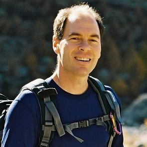

Tim Smith
Physicist / Computer Scientist / Mountaineer
Bio
Head of Collaboration, Devices and Applications Group at CERN, the European Particle Physics Laboratory.  He is an Open Science advocate leading initiatives at CERN and in the wider science community. He drove the launch of CERN’s Open Data Portal to share LHC big data with the world, as well as the Higgs Boson webcast which shared its discovery live around the globe. He also instigated and nurtures Zenodo within the European Commission’s OpenAIRE project as an open data service for world-wide science.
Tim came to CERN at the end of the 80s, obtained a PhD in Particle Physics and performed research at the LEP accelerator for 10 years. He then joined the CERN IT Department to lead teams innovating in computing farm management and physics data management
Teddies
|
Ted-Ed Original animation Shown at TEDxCERN 2013 Multiplying Dimensions Shown at TEDxTokyo 2016 Today Decides Tomorrow (translated) |
|
| Presented at TEDxChamonix 2017 Breakthrough | |
| The making of a Ted Ed: Visualizing big ideas |